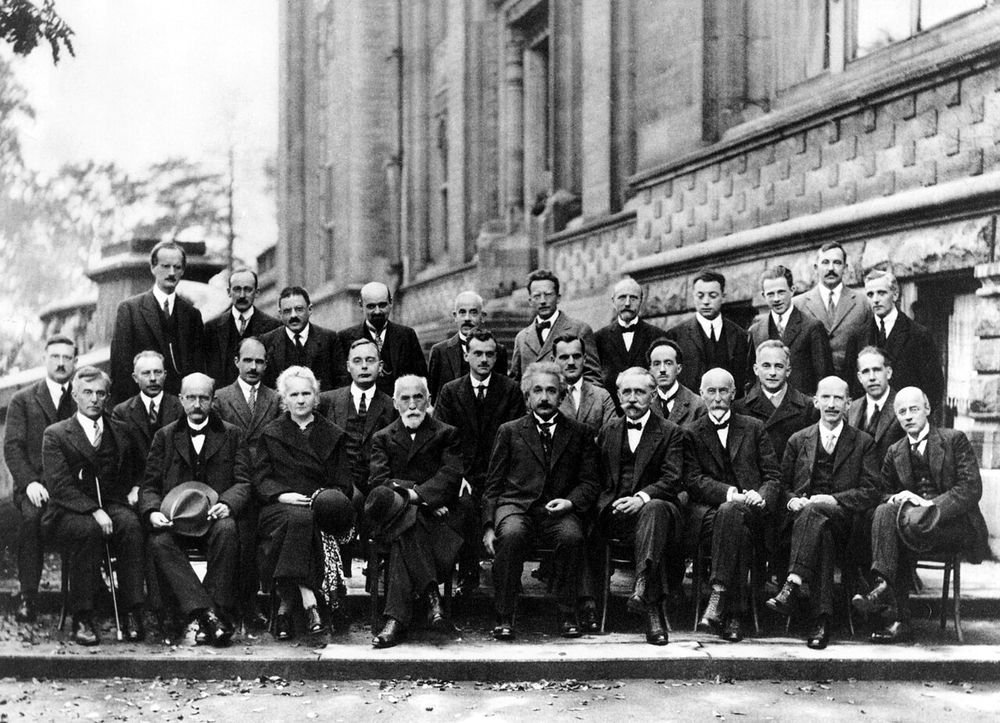

The machinery every algorithm on this site actually runs on.
Every pillar page on this site already teaches its ideas at three depths, toggled in place. This is a different kind of depth: not another tier of the same explanations, but the actual mathematical objects (state spaces, density matrices, measurement operators) that a real course builds before it lets you near Shor's algorithm. Nothing here is hand-waved. Every claim either has a proof or says plainly that it doesn't.

Every quantum claim on this site (Shor's algorithm breaks ECDSA, a surface code suppresses errors exponentially, a decoder reads a syndrome) rests on the same handful of mathematical facts: what a quantum state is, how it evolves, what happens when you measure it, and what you provably cannot do to it. Those facts are usually asserted on the page that needs them and moved past quickly, because that page has its own job. This page is where they get built properly, once, so every other page can point back here instead of re-deriving them.
This page's seven planned sections are now all built: a seventh, added 2026-08-26, once topics 16–17's own Hamiltonians existed to ask the natural next question: exactly how hard is finding one of these ground energies, in general? That doesn't mean quantum computing is exhausted. It means the load-bearing mathematics behind every other page on this site now has a proper home, once, instead of being asserted piecemeal.
Everything above described what a quantum state is. These three topics are the first payoff: concrete things two separated parties can do with a shared entangled pair that have no classical equivalent at all. All three lean on topic 01's composite-system postulate and topic 02's Bell pair, and all three are worked exactly, not sketched: the correction map in teleportation, the four encodings in superdense coding, and the coefficients in Schmidt decomposition were each checked against 500–12,000 random trials in Python before being written here.
These three are historically where quantum computing stopped being only physics. Each solves a promise problem: the input is guaranteed to have one of a small number of structures, and the algorithm's job is to find out which, and each does it with a query-complexity gap over any classical algorithm that can be proven outright, not benchmarked. None of them do anything commercially useful on their own; their importance is that they are the first proofs, small and completely worked, of the exact mechanism (phase kickback, then interference) that later algorithms on this site (Shor's, Grover's) scale up to problems that matter. The honest caveat, stated once here because it applies to all three: these are separations against an oracle (a black box promised to compute f, queried as a whole) not proofs that quantum computers are faster at every real problem. That is a real, provable gap in the query-complexity model, not a lesser one, but it is a different claim from separating complexity classes like P and BQP outright, which remains open.
Simon's algorithm (topic 10) found a hidden XOR-period using n Hadamard gates and ordinary linear algebra, because XOR-periods live in the group (ℤ/2ℤ)ⁿ and the Hadamard transform is exactly the Fourier transform over that group. Real periods (the ones behind factoring) live in ℤ/2tℤ instead, a bigger, different group, and finding them needs the Fourier transform for that group: the quantum Fourier transform. These three topics build it, use it to read out an unknown phase, and use that to recover a period: the exact chain Shor's algorithm runs, derived here instead of asserted there.
Every algorithm this page has built so far is proven: Deutsch's, Simon's, Shor's period-finding all come with a fixed circuit and a guaranteed advantage over any classical algorithm attacking the identical problem. This section is the honest counterpart. QAOA and VQE are a completely different kind of algorithm: built for the noisy, shallow-circuit hardware that actually exists today, and carrying a different guarantee: not "this is fast," but "this can never quietly report a wrong answer as if it were right." Nobody has a proof either one beats its best classical rival on the problems people actually care about: a fact this section states as plainly as the rest of this page states its proofs.
Every topic so far has talked about qubits, measurement, and algorithms without ever asking the most basic question a communication engineer would ask first: how much information is actually here, measured in bits? That question has a classical answer nearly 80 years old, and a quantum generalisation that both agrees with it in the classical limit and produces one result with no classical analogue at all: the fact that a perfectly certain whole can have a genuinely uncertain half. This closes two loose threads left open on purpose: topic 02 promised the object entropy is computed from, and topic 07 promised the number that finally says how much two systems are entangled, not just whether they are.
Topics 16–17 built VQE: a loop that always reports an energy honestly no lower than the truth, because the variational principle proves it. What that loop does not come with is a promise that it ever finds the true ground energy in reasonable time, on a general Hamiltonian. This section asks the question directly: exactly how hard is "find this Hamiltonian's ground energy," as a decision problem, and does the answer explain, rather than just describe, why every near-term algorithm on this page ships without a speed guarantee?